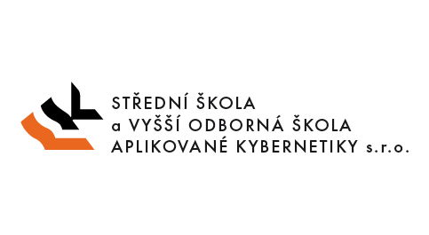

<!DOCTYPE html>
<html lang="en">
<head>
	<meta http-equiv="Content-Type" content="text/html; charset=utf-8">
	<meta name="viewport" content="width=device-width,initial-scale=1.0">
	<meta name="description" content="Projekt QEditor">
	<meta name="keywords" content="QEditor, QEditor - 3D teréní editor, QEditor - 3D terrain editor, terrain, Qt, editor">
	<meta name="author" content="Lukáš Veteška, David Podzimek">
	<meta name="robots" content="index, follow">
	
	<title>QEditor - 3D editor terénu</title>
	
	<link href="css/bootstrap.min.css" rel="stylesheet">
	<link href="css/lighter.css" rel="stylesheet">
	<link href="css/style.css" rel="stylesheet">
	<link href="css/bootstrap-responsive.css" rel="stylesheet">
	<link href="css/bootstrap.css" rel="stylesheet">
	<link href="css/fonts.css" rel="stylesheet">
	
	<script src="http://html5shim.googlecode.com/svn/trunk/html5.js"></script>
</head>
<body>
	<h1 class="hidden">QEditor - 3D editor terénu</h1>
	
	<nav class="navbar navbar-default navbar-fixed-top" role="navigation">
		<div class="container">
			<div class="navbar-header">
				<a class="navbar-brand nav-link" href="#top">QEditor</a>
			</div>
			<div class="collapse navbar-collapse navbar-ex1-collapse">
				<ul class="nav navbar-nav navbar-right">
					<li><a href="#technologie" class="nav-link">Technologie</a></li>
					<li><a href="#app" class="nav-link">O Aplikaci</a></li>
					<li><a href="#faqs" class="nav-link">FAQs</a></li>
					<li><a href="#about" class="nav-link">Kdo jsme</a></li>
				</ul>
			</div>
			<!-- /.navbar-collapse --> 
		</div>
		<!-- /.container --> 
	</nav>
	<!-- /.navbar -->
	<div id="top" class="carousel slide" data-ride="carousel"> 
		<!-- Indicators -->
		<ol class="carousel-indicators">
			<li data-target="#carousel-example-generic" data-slide-to="0" class="active"></li>
			<li data-target="#carousel-example-generic" data-slide-to="1"></li>
			<li data-target="#carousel-example-generic" data-slide-to="2"></li>
		</ol>
		<!-- Wrapper for slides -->
		<div class="carousel-inner">
			<div class="item active">  
				<div class="header-text hidden-xs">
					<div class="col-md-12 text-center" style="font-size: xx-large; text-shadow: black 3px 2px 3px;">
						<h1> <span>Vytvořte si <strong>virtuální svět...</strong></span> </h1>
					</div>
				</div>
			</div>
			<div class="item">  
				<div class="header-text hidden-xs">
					<div class="col-md-12 text-center" style="font-size: xx-large; text-shadow: black 3px 2px 3px;">
						<h1> <span>...nebo <strong>simulaci světa...</strong></span> </h1>
					</div>
				</div>
			</div>
			<div class="item">  
				<div class="header-text hidden-xs">
					<div class="col-md-12 text-center" style="font-size: xx-large; text-shadow: black 3px 2px 3px;">
						<h1> <span>...snadno a rychle s naší aplikací!</span> <br>
						</h1>
					</div>
				</div>
			</div>
		</div>
	</div>
	<section class="spacer bg2" style="background-color: #f0f0f0">
		<div class="container">
			<div class="row">
				<div class="span12">
					<div class="aligncenter">
						<div id="tweet">
							<ul class="tweet_list">
								<li class="tweet_first tweet_odd"><span class="tweet_time"><a title="view tweet on twitter" href="http://twitter.com/TheQEditor/status/465875804216639488">před 159 dny</a></span> <span class="tweet_text">Účast na SOČ...3.místo <a class="tweet_hashtag" href="https://twitter.com/search?q=%23Sna">#Sna</a>žitSeMůžouVyhrátNesmí</span></li>
							</ul>
						</div>
					</div>
				</div>
			</div>
		</div>
	</section>
	<div class="container">
		<h3 id="technologie" class="subhead">Technologie</h3>
		<div class="row benefits">
			<div class="col-md-4 col-sm-6 benefit">
				<div class="benefit-ball"> <span class="glyphicon glyphicon-globe"></span> </div>
				<h3>C++</h3>
				<p>Jádro celé aplikace je napsáno v programovacím jazyce C++.</p>
			</div>
			<div class="col-md-4 col-sm-6 benefit">
				<div class="benefit-ball"> <span class="glyphicon glyphicon-align-justify"></span> </div>
				<h3>Qt Framework</h3>
				<p>Pro lehčí implementaci na různé operační systémy využíváme Qt Framework 5.2.</p>
			</div>
			<div class="col-md-4 col-sm-6 benefit">
				<div class="benefit-ball"> <span class="glyphicon glyphicon-eye-open"></span> </div>
				<h3>OpenGL</h3>
				<p>K vykreslení scény v aplikaci využíváme grafickou knihovnu OpenGL 4.2.</p>
			</div>
		</div>
	</div>
	<div class="container-alternate">
		<div class="container">
			<h3 id="app" class="subhead">O Aplikaci</h3>
			<div class="container"> 
				<!-- Three columns -->
				<div class="row">
					<div class="span12">
						<div class="home-post">
							<div class="post-meta" style="background-color:#39ADE6;"> <i class="icon-file icon-2x"></i> <span class="date">K datu 23. března 2014</span> <span class="tags">Abstrakt</span> </div>
							<div class="entry-content">
								<p>  QEditor je aplikace s rozsáhlou sadou nástrojů, které mají společný cíl – pomáhat při vytváření virtuálního světa či simulace světa.<br>
									Dnes lze najít spoustu řešení pro vytvoření virtuálního světa, na kterých lze postavit videohru či simulaci. Většina z nich však obsahuje zbytečné funkce a nástroje, které při tvorbě nelze upotřebit.<br>
									Výše uvedené důvody nás motivovaly k tomu, abychom se pokusili navrhnout a posléze i realizovat vlastní projekt, který by tuto aplikaci vytvořil a zbavil uživatele přebytečně bezvýznamných funkcí.<br>
									Aplikace využívá nejmodernější hardwarové a softwarové technologie. QEditor je možné spustit na operačních systémech Windows, kde má plnou podporu, probíhá interní testování operačního systému Linux Debian, do budoucna plánujeme i podporu operačního systému Mac OS X.<br>
									Celý program je napsán v programovacím jazyce C++ s frameworkem Qt. Využíváme OpenGL knihovnu pro vykreslení celé scény. Dále používáme nově shaderovací jazyk GLSL, který umožňuje přímou komunikaci s grafickou kartou v počítači.<br>
									Mezi hlavními nástroji jsou momentálně dostupné tyto: ukazatel, nástroj k upravování terénu, nástroj na kreslení textur, nástroj Vertex shading, nástroj voda a nástroj 3D modelů.<br>
									Po několikaměsíčním vývoji můžeme konstatovat, že byla vytvořena spolehlivá aplikace, která je použitelná k již zmíněným účelům.<br>
									Cílem této práce bylo navrhnout a implementovat terén, vytvořit základní funkce jako uložit, načíst a podobné, implementovat základní nástroje pro upravování virtuálního světa. Zároveň po dobu celé práce byla aplikace koncipována tak, aby výsledný terén mohl být použit i v jiném programu. </p>
							</div>
						</div>
					</div>
				</div>
			</div>
			<!-- /.container --> 
		</div>
		<!-- /.container-alternate -->
		<div class="blankdivider30"></div>
	</div>
	</div>
	<!-- /.container -->
	</div>
	<!-- /.container-alternate -->
	
	<div class="container">
		<h3 id="faqs" class="subhead">Často kladené otázky</h3>
		<div class="row faqs">
			<p class="col-md-4 col-sm-6"> <strong>Jaké je reálné využití?</strong><br>
				Kromě tvorby map pro počítačové hry, má naše aplikace další široké spektrum
				využití. Například vytváření reálné krajiny pomocí dat z mobilní aplikace, nebo pro výuku
				zeměpisu na základních školách a dalo by se pokračovat... </p>
			<p class="col-md-4 col-sm-6"> <strong>Podpora platforem?</strong><br>
				Snažíme se o cross-platform všech běžně používaných desktopových systémů Windows, Linux, Mac.
				Kromě toho se snažíme podporona zařízení jako jsou grafické tablety, které značně ulehčují práci s naším editore... </p>
			<p class="col-md-4 col-sm-6"> <strong>Kde a za kolik QEditor seženu?</strong><br>
				QEditor je stále ve fázi vývoje, ale i tak už je první verze na světě, můžete si ji <a href="https://github.com/glararan/QEditor/releases/download/0.1b/QEditor_win_release_0.1b.rar">zdarma stáhnout zde &DoubleDownArrow;</a> <br>
				<br>
				<br>
				<br>
			</p>
			<!--<p class="col-md-4 col-sm-6">
				<iframe width="300" height="200" src="//www.youtube.com/embed/UnCrlX8Z3gs" frameborder="0" allowfullscreen></iframe>
			</p>
			<p class="col-md-4 col-sm-6">
				<iframe width="300" height="200" src="//www.youtube.com/embed/sekArynEHTs" frameborder="0" allowfullscreen></iframe>
			</p>
			<p class="col-md-4 col-sm-6">
				<iframe width="300" height="200" src="//www.youtube.com/embed/YmkjIbbTFe0" frameborder="0" allowfullscreen></iframe>
			</p>-->
		</div>
		<!-- /.faqs --> 
	</div>
	<!-- /.container -->
	
	<div class="container-alternate">
		<div class="container">
			<h3 id="about" class="subhead">Kdo jsme</h3>
			<div class="row">
				<div class="span5 offset1">
					<div>
						<h2>Studenti královéhradecké <strong>kybernetiky</strong></h2>
						<p> Jsme studenti prvního a třetího ročníku Střední školy a vyšší odborné školy aplikované kybernetiky s.r.o. v Hradci Králové. Vedoucí projektu a hlavní vývojař aplikace Lukáš Veteška 
							z Bystřice nad Pernštejnem, druhý vývojář David Podzimek z Hradce Králové.<br>
							<span class="pull-right">(K datu 18.10.2014)</span> </p>
					</div>
				</div>
				<div class="span5 lowoffset">
					<div class="aligncenter">  </div>
				</div>
			</div>
			<div class="row" id="centerPeople">
				<div class="span3 flyIn animated fadeInUp">
					<div class="people"> 
						<h3>Lukáš Veteška</h3>
						<p> Vedoucí vývojář </p>
					</div>
				</div>
				<div class="span3 flyIn animated fadeInUp">
					<div class="people"> 
						<h3>David Podzimek</h3>
						<p> Vývojář </p>
					</div>
				</div>
			</div>
		</div>
	</div>
	<footer>
		<div class="container clearfix">
			<ul class="social-networks">
				<li><a href="https://www.youtube.com/watch?v=ajP2bfSsHzI&amp;list=PLs3aLd2a8EWPx3bzOMpV0TdFlZ_KFisLF"><i class="icon-circled icon-bgdark icon-youtube-play icon-2x"></i></a></li>
				<li><a href="https://twitter.com/TheQEditor"><i class="icon-circled icon-bgdark icon-twitter icon-2x"></i></a></li>
				<li><a href="QEditor.pdf"><i class="icon-circled icon-bgdark icon-print icon-2x"></i></a></li>
				<li><a href="https://github.com/glararan/QEditor"><i class="icon-circled icon-bgdark icon-terminal icon-2x"></i></a></li>
			</ul>
			<p class="pull-left">&copy; QEditor <script type="text/javascript">var d = new Date();document.write(d.getFullYear());</script></p>
			<p class="pull-right"> templáta z Coverstrap </p>
		</div>
		<!-- /.container --> 
	</footer>
	
	<script src="js/jquery.js"></script> 
	<script src="js/bootstrap.min.js"></script> 
	<script>
		  $(".nav-link").click(function(e) {
			e.preventDefault();
			var link = $(this);
			var href = link.attr("href");
			$("html,body").animate({scrollTop: $(href).offset().top - 80}, 500);
			link.closest(".navbar").find(".navbar-toggle:not(.collapsed)").click();
		  });
		</script> 
	<script src="js/animate.js"></script> 
	<script src="js/jquery.tweet.js"></script> 
	<script src="js/inview.js"></script> 
	<script src="js/jquery.flexslider.js"></script>
</body>
</html>